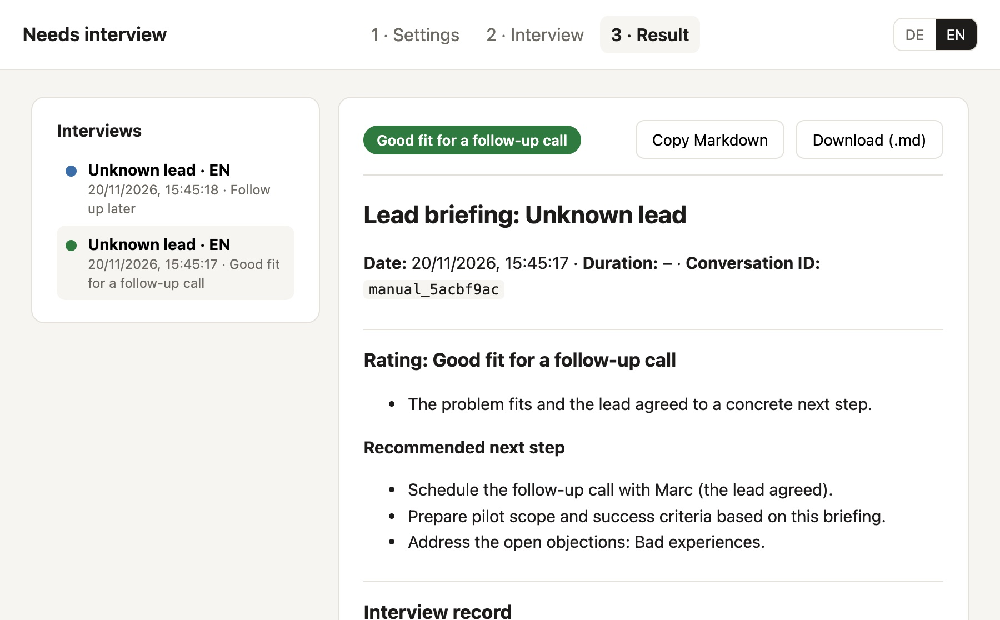
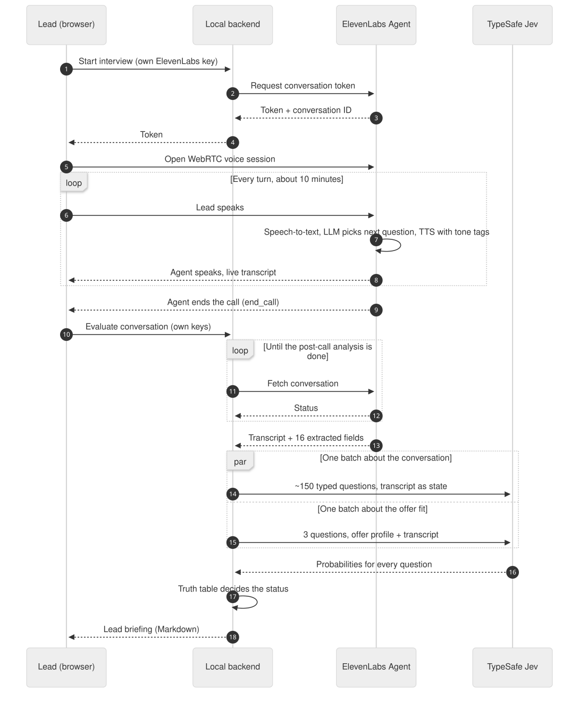
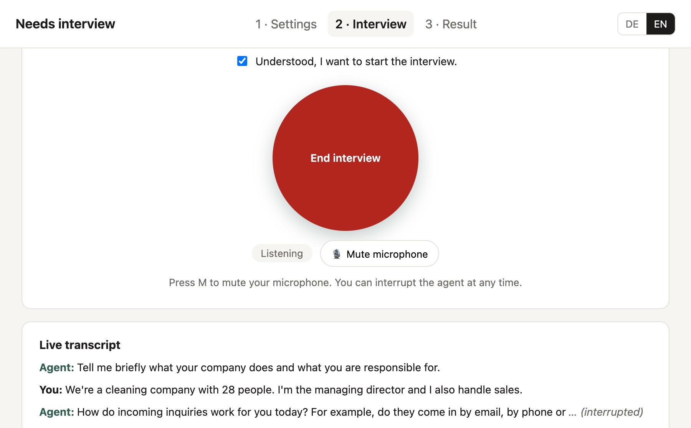
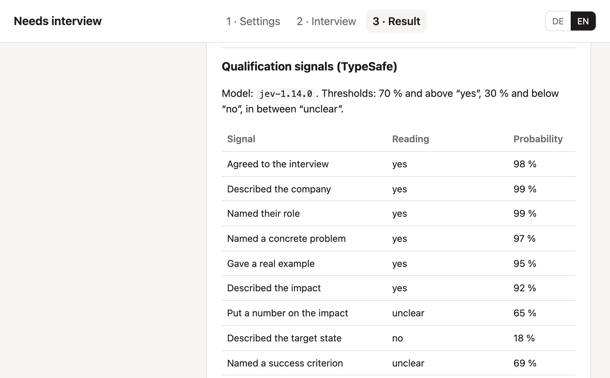
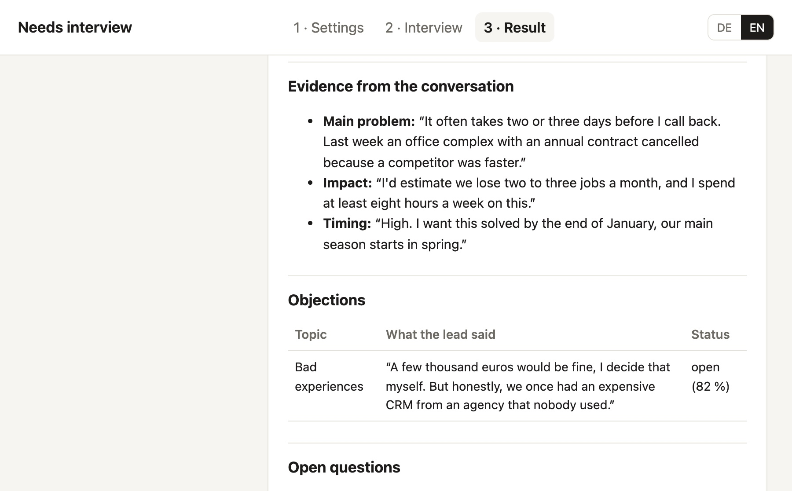
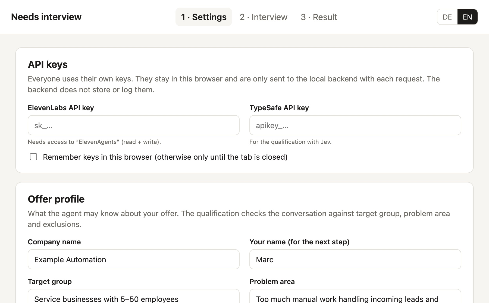

BUILDING IN PUBLIC · NOTES
A voice agent that turns a sales call into a lead briefing
I built a German and English voice agent that interviews leads, then lets a decision model rate the call and writes a structured briefing.
Before I build something for a client, I want to know where their process actually hurts, who decides, and whether they would pay for a small pilot. Those first conversations follow the same pattern every time. So I built an agent that runs them: a lead clicks “Start interview”, talks for about ten minutes, and I get a briefing with the problem, the evidence, the open objections and a recommended next step.

The conversation runs on ElevenLabs
The voice agent lives in ElevenLabs Agents, with one agent per language. Its prompt is built from an offer profile: target group, problem area, what I can and can’t offer, and what the agent may say about prices. It never quotes prices or promises a meeting. When the call is done, ElevenLabs extracts sixteen briefing fields, such as the main problem, impact and decision process, as free text.

A checklist, not a script
The interview follows fifteen building blocks, from the current process to budget and pilot readiness, but the agent treats them as a checklist. It remembers what the lead already answered in passing and doesn’t ask again. When the lead goes off on a relevant tangent, another problem or a story about a tool, the agent follows it for one or two questions, then bridges back with something like “Earlier you mentioned …” and picks up the next open topic. Questions to the agent get a short answer from the approved facts. Objections get acknowledged, explored and checked again.

The lead can cut in at any time, even during the greeting. The agent stops, doesn’t repeat its unfinished sentence and responds to what the lead said. Short acknowledgements like “mhm”, “yeah” or “okay” don’t count as interruptions, so the agent can finish its thought, and turn-taking is set to patient so people get time to think. If someone is in a noisy place, they can mute their microphone with a button or the M key. If answers still come through garbled, the agent suggests a quieter spot.

The agent uses Eleven v4 Turbo, which turns on ElevenLabs’ expressive mode. The prompt asks for a warm, curious tone and lets the model add a tag now and then: a short [sighs] when someone describes a painful process, [laughs] for a joke, [excited] when the lead agrees to a next step and [slow] for the summary. At most one per reply, and the tags are stripped from the transcript before anything is evaluated.
A decision model rates the call, code decides
The qualification uses Jev, TypeSafe’s decision model. Jev doesn’t write text. It answers typed questions with calibrated probabilities, so I ask it small, concrete ones: did the lead name a concrete problem, describe a real case, put a number on the impact, agree to talk to me? Does the problem fit my problem area? For each of eight objection types, did the lead raise it, and do they still hold it at the end? Every statement from the lead also gets a yes/no question about whether it describes the problem, the impact or the timing, so the briefing can quote the lead’s own words instead of a summary.
Jev reads the state once and answers all questions about it in parallel, so they go out as one batch: about 150 questions for a ten-minute call, including the quote questions for all eight objection types up front. Code only reads the quotes for objections that were actually raised. A second batch, sent at the same time, checks the fit with my offer, because that one needs the offer profile in its state. Both of my test transcripts came back in under a second.
The status itself is plain code: a small truth table turns those answers into “good fit for a follow-up call”, “needs clarification”, “follow up later” or “outside the offer”. Anything above 70 % reads as yes and anything below 30 % as no. In between it stays “unclear” and shows up as an open question.


Everyone brings their own keys
The app is a small local web app. Each person enters their own ElevenLabs and TypeSafe keys. They stay in the browser and travel to the local backend with each request; the backend never reads keys from its environment and doesn’t store them. The agent is set up so a conversation can only start with a token the backend fetches with that person’s key. The whole interface, the agent and the briefing work in German and English.

What’s next
Both models are cloud services for now. Next I want to run the voice locally, with speech recognition, the conversation model and speech synthesis on my own hardware, and to try other decision models in place of Jev. The qualification already goes through one small client, so swapping the model doesn’t change the truth table.